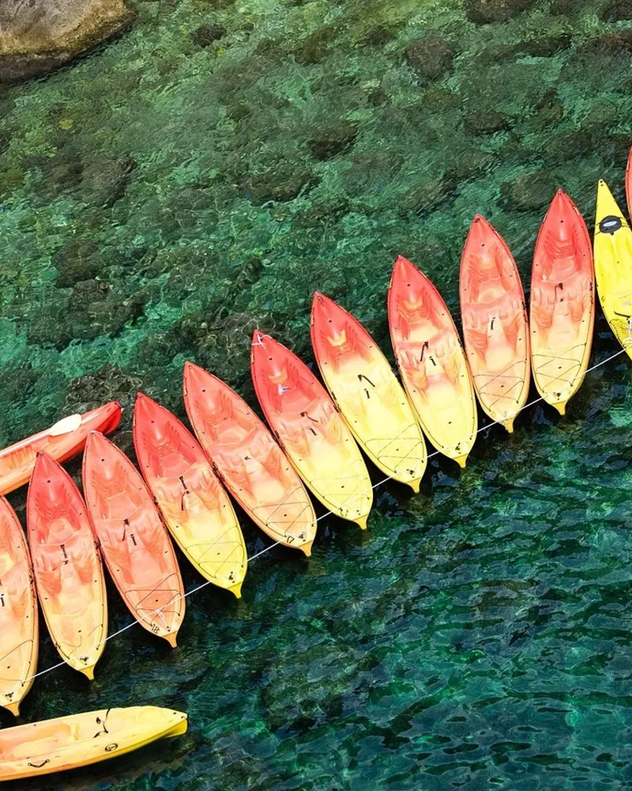
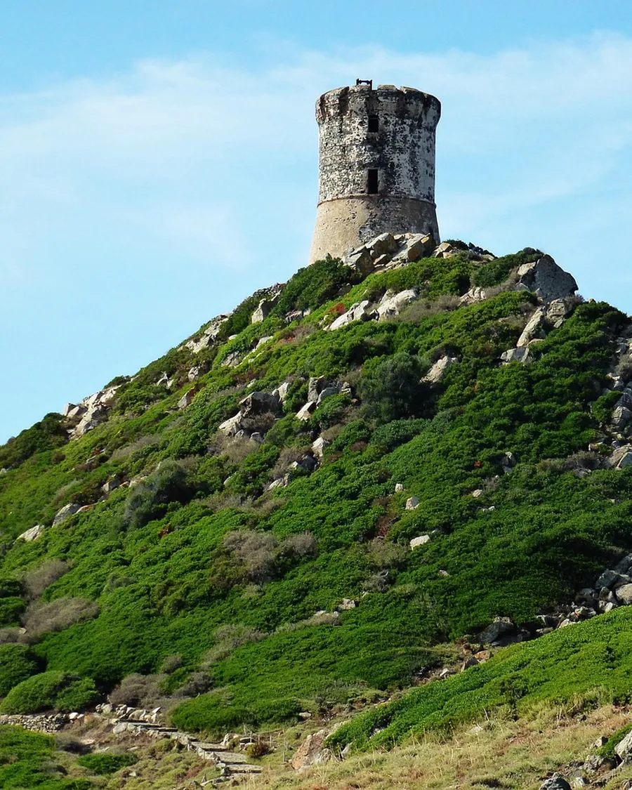
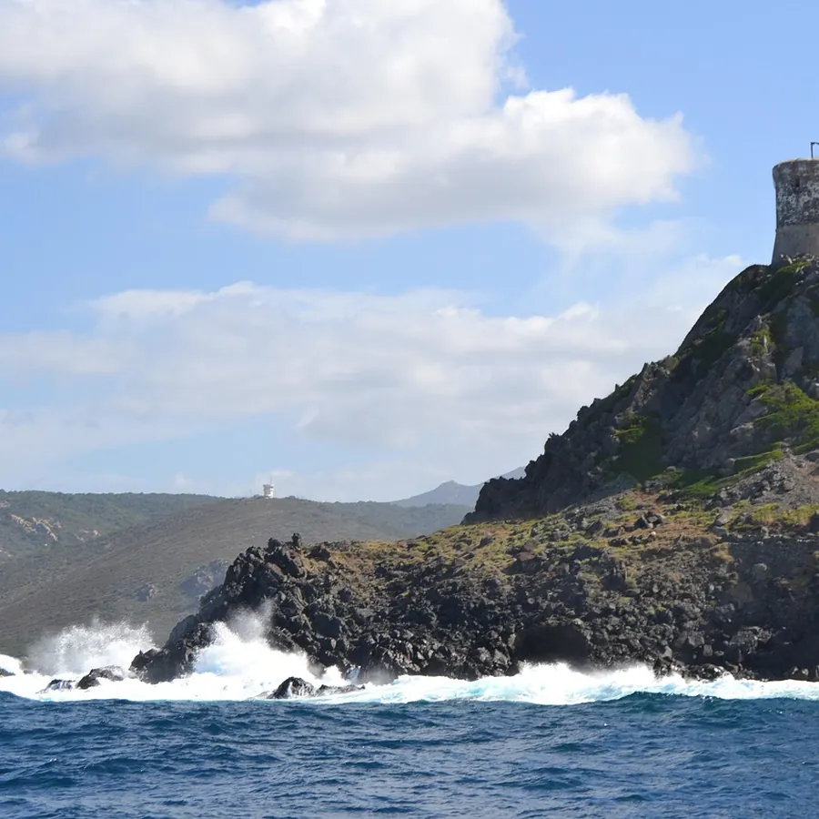
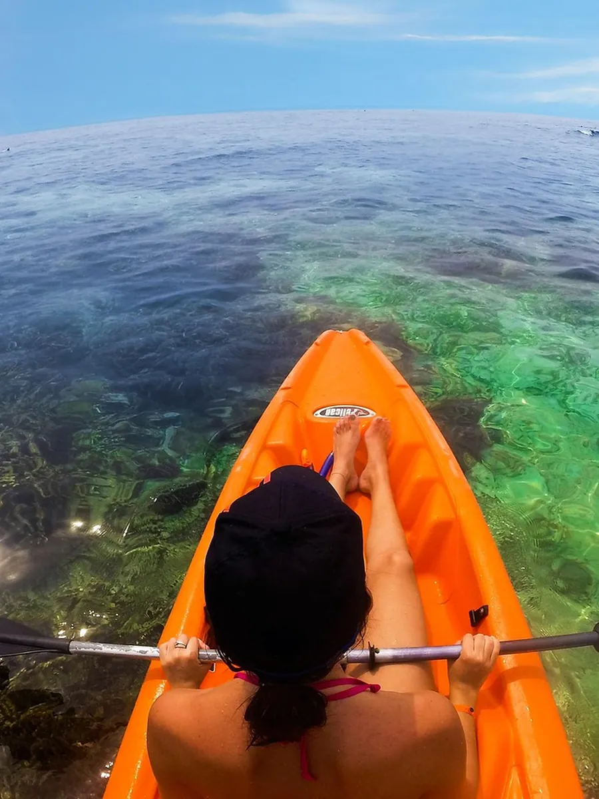

Tous les prix
Par embarcation, pas par personne. Gilets, bidon étanche et carte des criques compris.

Préparer votre sortie
Choisissez l'embarcation, la durée et le départ. Chaque jour a son drapeau : par drapeau rouge, on ne sort pas, et on vous rembourse.
Trois criques depuis le ponton
La plus proche est à vingt-cinq minutes de pagaie, la plus loin à une demi-heure de semi-rigide.



Avant de partir
Ponton de la plage, golfe d'Ajaccio
D'avril à octobre, tous les jours de 9 h à 19 h
Parking de la plage à deux minutes à pied
